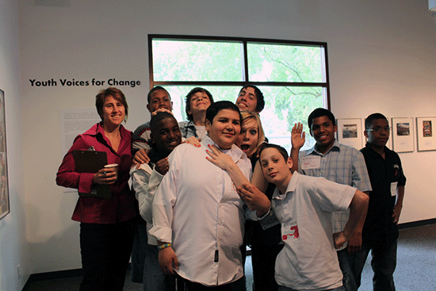

Resources
Putting Youth on the Map believes all people— including youth— should understand how to access data to inform community change. On this page click the dropdown menu or scroll down to
- Find links to other online sources of youth data and youth data maps.
- Access online tools for uploading and mapping your own data.
- Download curricula for helping youth and other grassroots advocates learn about the power of data maps to support community change.

Links
Looking for data that are not available on Putting Youth on the Map? Many other sites also provide youth-relevant data.
Check out other maps at the Center for Regional Change, including The Regional Opportunity Index. It provides analyses of opportunities available for youth, families and communities. The site currently provides maps for California’s Central Valley; it will eventually expand statewide.
Education
Foster Care
Health
Physical and Built Environment
Juvenile Justice
Youth Development
Multiple Data Types
- American FactFinder is a portal to U.S. Census Bureau datasets and economic surveys. You can map the data or download it.
- Community Commons allows you to make maps with existing data, upload your own data and generate community health reports.
- ChildrenNow.org hosts the 2010 California County Scorecard of Children's Well-Being. It tracks 26 interrelated indicators of children's well-being for each of California's 58 counties.
- Diversity Data and DiversityDataKids provide maps with various equity analyses.
- This interactive mapping tool allows users to locate federally supported youth programs in a community.
- HealthyCity.org provides current data, maps, and service referrals for California at many different geographic levels, including census block group and school district, on an online platform.
- Kidsdata.org includes data about the health and well being of children across California. The site offers data for every city, county, and school district in the state.
- Measure of America offers several mapping tools, including a Human Development Index and a tool for forecasting potential effects of educational improvement.
- Policy Map lets users create maps using public data layers that can be shared and saved.
Other
- Community Health Advisor allows you to model potential effects of implementing certain health-oriented policies on your county or state.
- This KidsRights Index is the first global ranking on how countries world-wide are adhering to children’s rights.
- National Equity Atlas generates and visualizes data on the economic benefits of equity.
We’ll periodically be updating this list, so please send additional resources to info@pyom.ucdavis.edu.
Tools: Put yourself on the map
The data and maps on these websites present a very partial story about California’s youth and communities. Many challenges remain undocumented, and many resources are not reflected. Some information might be inaccurate. To fill out this picture, we need young people and youth allies to put their knowledge on the map.
- Some youth have been doing just that in California’s Capital Region with the CRC using the Youth Story Map.
- Other youth are involved in similar efforts around the world. For example, see UNICEF-GIS.
Here are a variety of free websites that support people creating their own maps.
- Click2Map is a free onlne map creation tool.
- Community Commons allows you to make maps with existing data, upload your own data and generate community health reports.
- Crowdmap is site for finding and sharing information as well as creating maps
- Google Map Maker is a mapping site that uses crowdsourcing.
HealthyCity.org provides current data, maps, and service referrals for California at many different geographic levels, including census block group and school district, and enables uploading of point data and visual media.
- iMapBuilderOnline is a tool for creating interactive flash and google maps in web browsers.
- Mangomap is a tool for creating interactive web maps.
- MapStory is a platform for creating, sharing and collaborating stories to understand global dynamics over the course of history
- Map Your World will be a multi-platform project where young people will be able to use new technologies to map, track and improve the condition of their communities
- OpenStreatMap is a platform that creates and provides free geographic data.
- StatPlanet offers Interactive Mapping and Visualization Software.
- Ushahidi provides free and open source software for information collection, visualization of data and interactive mapping
- ZeeMaps is a tool for creating and publishing interactive maps.
Some of these sites have examples and tutorials. Here are a few examples.
- Video on participatory mapping from the website of ‘Mapping for Rights’ which is an initiative concerned with community and indigenous land rights and forest governance in the Congo Basin.
- Website on crowdsourcing.
- Tutorial on crowdmap.
Learn
Want to orient youth and other community users to putting youth on the map? Click below to view and download curriculum materials
Look out for these materials in the winter! Contact us now to let us know if you’d like an update when they are released.
Module 1
Module 2
Module 3
-
Module 1
INFORMATION
Here's some information about the module 1.
CURRICULUM
Here's some information about the curriculum.
-
Module 2
INFORMATION
Here's some information about the module 1.
CURRICULUM
Here's some information about the curriculum.
-
Module 3
INFORMATION
Here's some information about the module 1.
CURRICULUM
Here's some information about the curriculum.